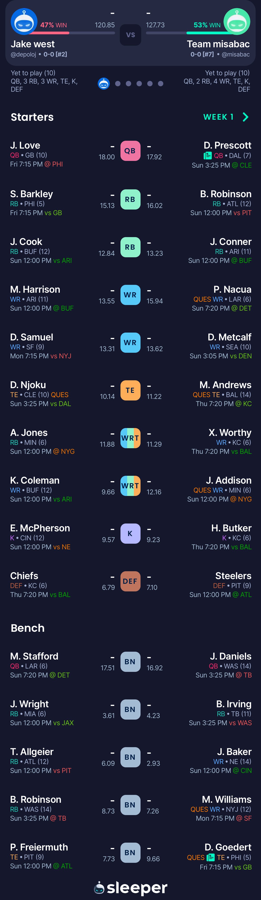
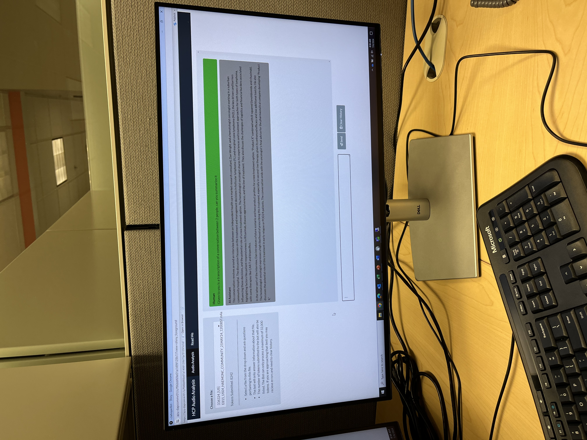

Technical Portfolio
Personal

- Used AI learning models to predict optimal fantasy football outcomes
- Used Python, Pandas, and Beautiful Soup to obtain and maintain datasets for players
- Trained the models on obtained data and drafting positions to make the optimal team
Professional

- Worked with crossfunctional teams to design data-driven applications to support the teams
- Utilized SQL, Python, and Azure Services to create an audio transcription algorithm
- Developed a Chatbot UI using OpenAI's gpt-4o model that provides a secure way to use GenAI on company data in accordance to compliance